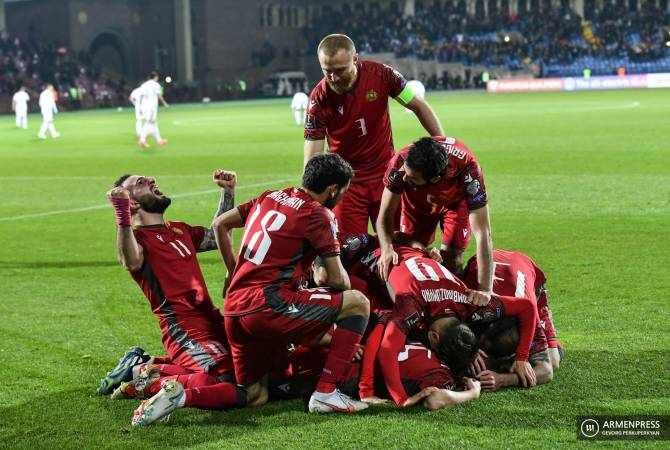
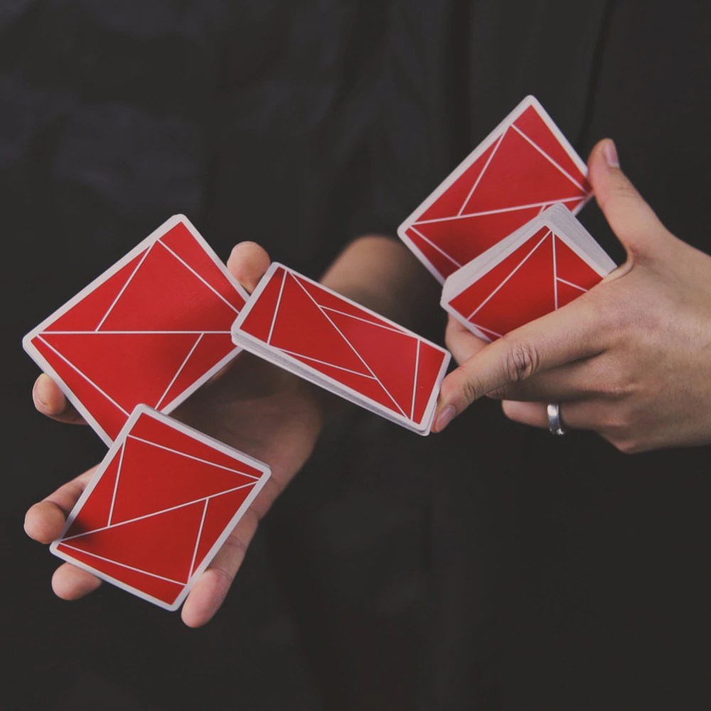
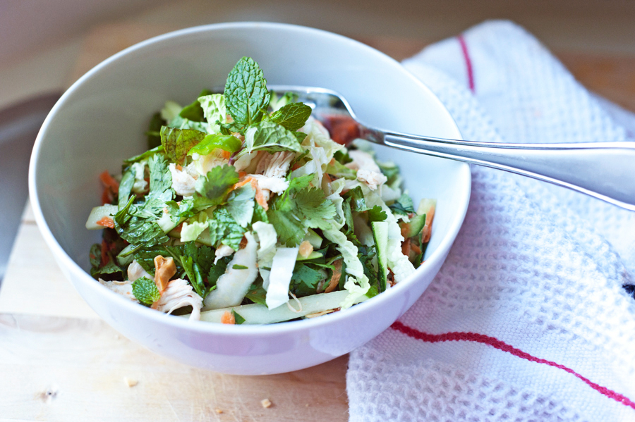
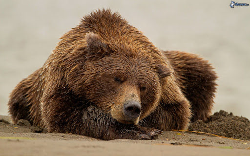

Իմ հոբբիները
- Ֆուտբոլ
Համ խաղում եմ, համ երկրպագում։Հուսով եմ մեր հավաքականը այսօր կհաղթիի։
 - Երգեր
Շաաաատ եմ լսում։Առանց երգի անհնար է։

- Ճանապարհորդություններ
Նոր ճանապարհներ,բարձունքներ, հուշարձաններ,կոթողներ։
- Խաղաքարտեր
Ֆոկուսներ՝ մի ուրիշ հրաշքների աշխարհ, այստեղ ամեն ինչ հնարավոր է։
 - Խոհանոց
ՈՒշ ուշ, բայց համով։
 - Լուսանկարներ
Կյանքի լավագույն պահերը նկարել ու միի 20 տարի հետո նայել, ասեք որ թույնաա։
- Քնել
Դե ո՞վ չի սիրում
